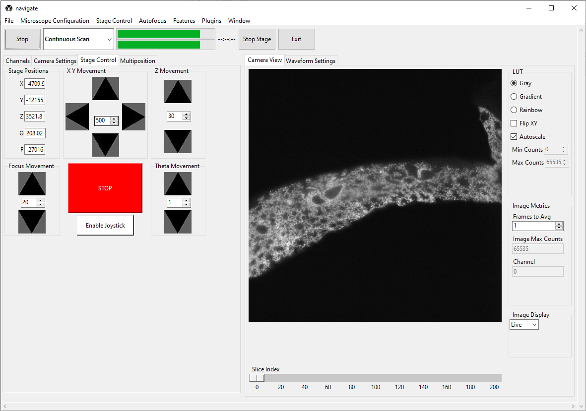
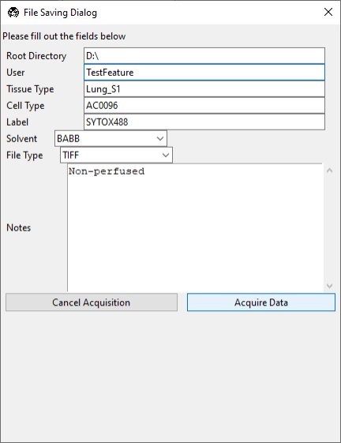
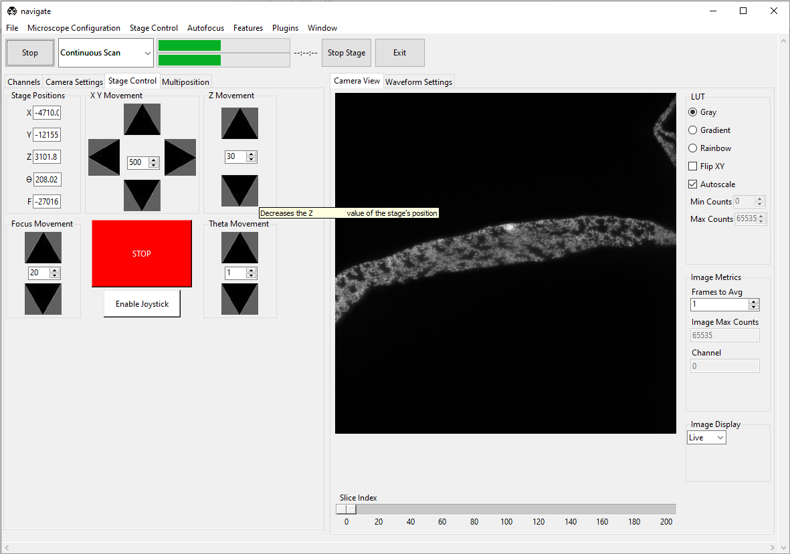
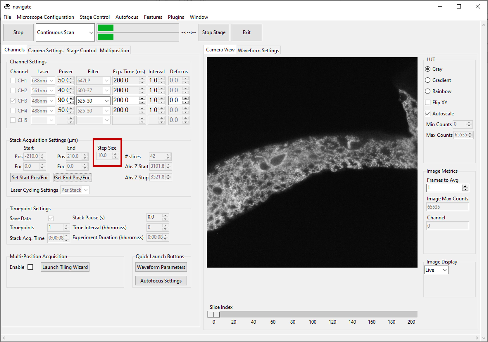

Acquire an Image (Beginner)
This guide will describe how to acquire a single image and a z-stack using the navigate software package.
Launching the Software Package
Open Anaconda Prompt
To start, you need to open the Anaconda Prompt. Follow these steps:
On Windows, click on the Start menu.
Type
Anaconda Promptinto the search bar.Click on the Anaconda Prompt application to open it.
Note
Ensure that Anaconda and navigate are already installed on your system. If not, please refer to our Quick Start Guide for more information.
Activate Conda Environment
Once the Anaconda Prompt is open, activate the desired conda environment. By default, the command prompt will open the base environment (as shown in parentheses). To activate navigate environment, type the following command into the Anaconda command window and press Enter
(base) conda activate navigate
Launch the Software Package
After activating the environment, navigate should now be shown in parentheses. After you have already configured navigate, you can launch it by typing the following command into the Anaconda command window:
(navigate) navigate
The navigate software package will launch and the main window will appear.

Configure the Channel Settings
Select the Channels tab, which is located on the upper left of the main window.
Under the Channel Settings section, select the number of channels needed for imaging. For each channel selected, you will need to configure the acquisition settings:

Select the appropriate Laser from the dropdown menu.
Select the appropriate Power for the laser.
Select the appropriate emission Filter from the dropdown menu.

Specify the camera Exp. Time (ms). A good default value is
100or200ms.Specify the Interval to be
1.0. While this feature is not currently implemented, future releases will allow users to image different channels at different time intervals.Specify the Defocus to be
0. This feature allows you to adjust for chromatic aberrations that result in focal shifts between each imaging channel.
Configure the Camera Settings
Select the Camera Settings tab.
For standard imaging applications, select Normal in the Sensor Modes dropdown menu within the Camera Modes section.
If you are using the rolling shutter, select Light-Sheet and specify its Readout Direction and Number of Pixels.
Note
For more information on how to configure the rolling shutter for ASLM operation, please refer to ASLM.

- Choose the size of your camera’s field of view.
Specify the Region of Interest Settings by entering the appropriate Number of Pixels for both the Width and Height values. Alternatively, one can select from one of several default values in the Default FOVs section.
Note
The FOV Dimensions (microns) is automatically calculated based on the Number of Pixels and the pixel_size as specified in the zoom section of your your
configuration.yamlfile.zoom: pixel_size: 20x: 0.325 # magnification, and pixel size in microns

Note
If multiple channels are selected, each channel will be acquired with the same camera Sensor Mode, Readout Direction, and Region of Interest Settings.
Acquire in a Continuous Scan Mode
Select “Continuous Scan” in the dropdown next to the Acquire button in the acquire bar.

Press Acquire. This will launch a live acquisition mode.
Note
If multiple channels are selected, each channel will be imaged sequentially. The order of imaging is determined by the order of the channels in the Channel Settings section of the Channels tab, and will proceed from the top to the bottom of this channel list.

- Move the stage to identify the location of the sample.
Select the Stage Control tab, and use the graphical user interface to move the stage. This includes buttons for moving the stage in
X,Y,Z,F, andThetadirections. * The step size for each axis can be adjusted with the spinbox next to each button. * For stages loaded in a synthetic mode, buttons will be disabled. * Absolute positions can be entered in the text boxes next to each button. * Check configuration settings for more information.Alternatively, if available, use the manufacturer-provided joystick to position the sample.
Note
The axes for a light-sheet microscope vary in the literature. Here, we define the
Yaxis as the direction of the light-sheet propagation, theZaxis as the direction of the detection objective, and theXaxis as the direction perpendicular to the light-sheet and detection objective axes.The
Faxis typically controls the position of the detection objective along the detection axis.The
Thetaaxis typically controls the rotation of the sample.Warning
One should always be careful when moving the stage.
If the stage is moved too quickly, the sample and/or microscope may be damaged.
We strongly recommend that you implement stage limits in your configuration file. Please refer to the configuration settings for more information.
Press the Stop button in the acquisition bar to stop acquisition.

Acquiring a Single Image
Check the Save Data box in the Timepoint Settings section under the Channels tab to save the acquired images. Check this box before acquiring data.

Select Single Acquisition from the dropdown next to the Acquire button.

Press Acquire to open the File Saving Dialog interface. Enter the sample parameters, notes, location to save file, and filetype in the File Saving Dialog that pops up.

Press Acquire Data to initiate acquisition. Acquisition will automatically stop once the image is acquired.
Note
Each acquisition will be saved in a separate folder (e.g.,
Cell01,Cell02, …) within the directory specified in the File Saving Dialog interface.Data will not be overwritten between acquisitions.
Acquiring a Z-Stack
Using the Stage Control, go to the desired z-position in the sample. Make sure that the sample is in focus. To use the autofocus feature, please refer to the Autofocus Settings.
Under the Channels tab, in Stack Acquisition Settings (μm) press Set Start Pos.

Using the Stage Control, go to a different z-position within the sample. Again, make sure that the sample is in focus.

Under the Channels tab, in Stack Acquisition Settings (μm) press Set End Pos.

Note
If there is a shift in
Fbetween the start and stop positions, theFaxis will be ramped synchronously withZto maintain focus.Check configuration settings for more information to determine if focus is enabled in hardware.
Refer to Imaging on a mesoSPIM BT section for an example of how to acquire a z-stack with a focus ramp.
Type the desired step size in microns in the Step Size dialog box in Stack Acquisition Settings (μm).
Note
The minimum step size, and increment between steps, are graphical user interface defaults that are specified in the
configuration.yamlfile. More information can configuration settingsgui: stack_acquisition: step_size: min: 0.100 max: 1000 step: 0.1
If using multiple channels for imaging, select either Per Z or Per Stack under Laser Cycling Settings in the Stack Acquisition Settings (μm) section under the Channels tab.
Per Z acquires all channels before moving the stage to a new position.
Per Stack acquires all images in a stack acquisition for a single channel before moving the stage back to the start position and restarting acquisition for the subsequent channel until all channels are imaged.

Select Z-Stack from the dropdown next to the Acquire button. Press Acquire.

Enter the sample parameters, notes, location to save file, and filetype in the File Saving Dialog that pops up.
Press Acquire Data to initiate acquisition. Acquisition will automatically stop once the image series is acquired.